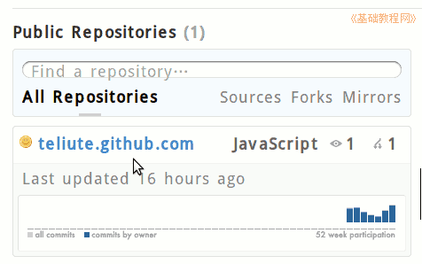
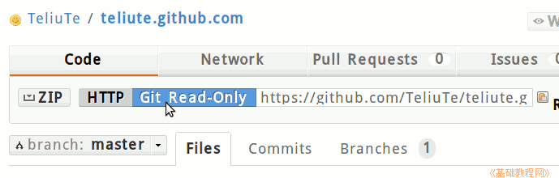
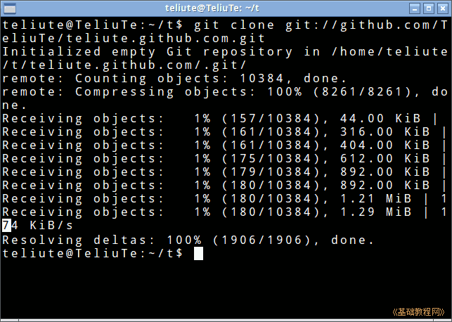
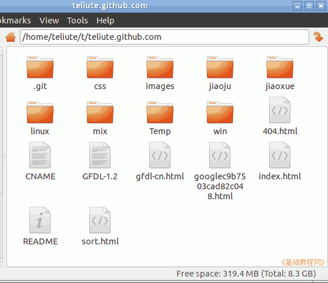

git 操作指南
作者：TeliuTe 来源：基础教程网
六、克隆和更新 返回目录 下一课克隆可以把远端库完成下载到本地；
1、git clone 克隆
1）打开浏览器，输入库所在的网址，例如：https://github.com/teliute 点击打开里面的库；

2）在出来的库面板中，点击 Git Read-Only 标签，右边文本框中出现访问地址；

3）复制 git 访问地址，然后打开终端，进入一个空文件夹中，输入命令 git clone https://github.com/TeliuTe/teliute.github.com.git

4）耐心等待完成后，在这个文件夹中就会得到一个一模一样的库；

2、git pull 更新本地库
1）如果你有两台电脑，当你在一台电脑向服务器上传文件后，另一台电脑中的库就要和服务器同步一下；
2）输入命令 git pull teliute master 就可以和服务器进行同步；
3）；
4）；
5）；
本节学习了克隆和更新的基础知识，如果你成功地完成了练习，请继续学习下一课内容；
本教程由86团学校TeliuTe制作|著作权所有
基础教程网：http://teliute.org/
美丽的校园……
转载和引用本站内容，请保留版权信息和本站链接。